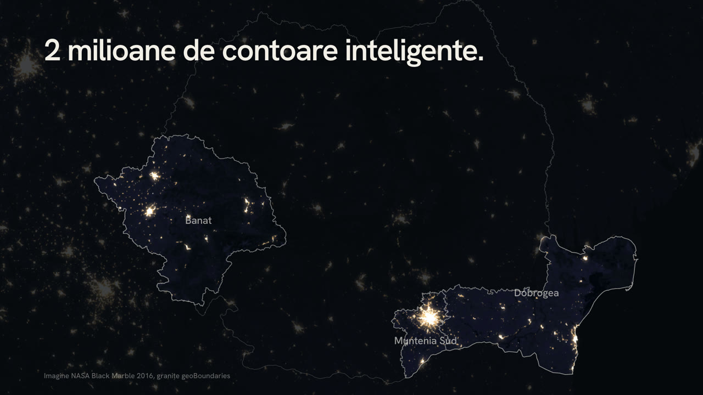
01: Noaptea
0.0 to 2.4s
„2 milioane de contoare inteligente.” Imagine reală NASA; cele trei regiuni Rețele Electrice rămân luminate.
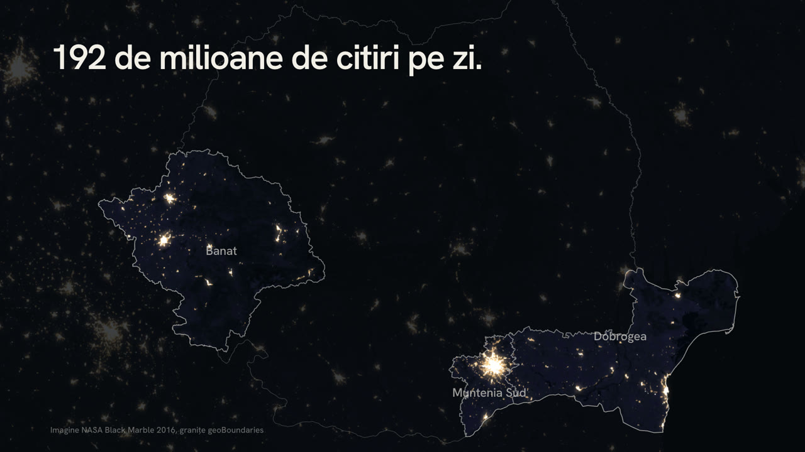
01: Noaptea
2.4 to 5.0s
„192 de milioane de citiri pe zi.” Apoi zoom prin lumina Bucureștiului.
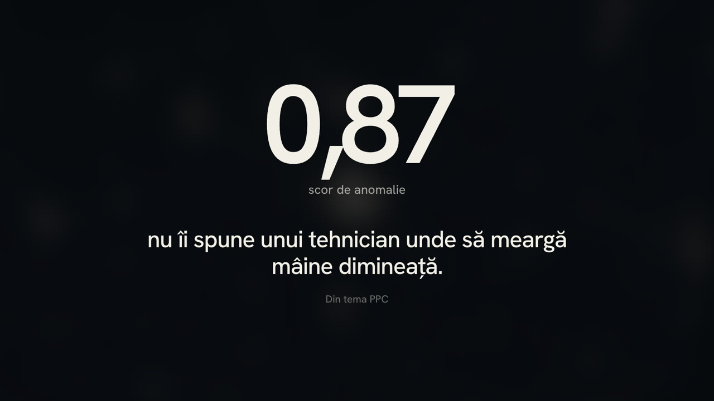
02: Scorul
5.0 to 10.0s
Din lumină iese scorul 0,87, cu fraza din tema PPC.
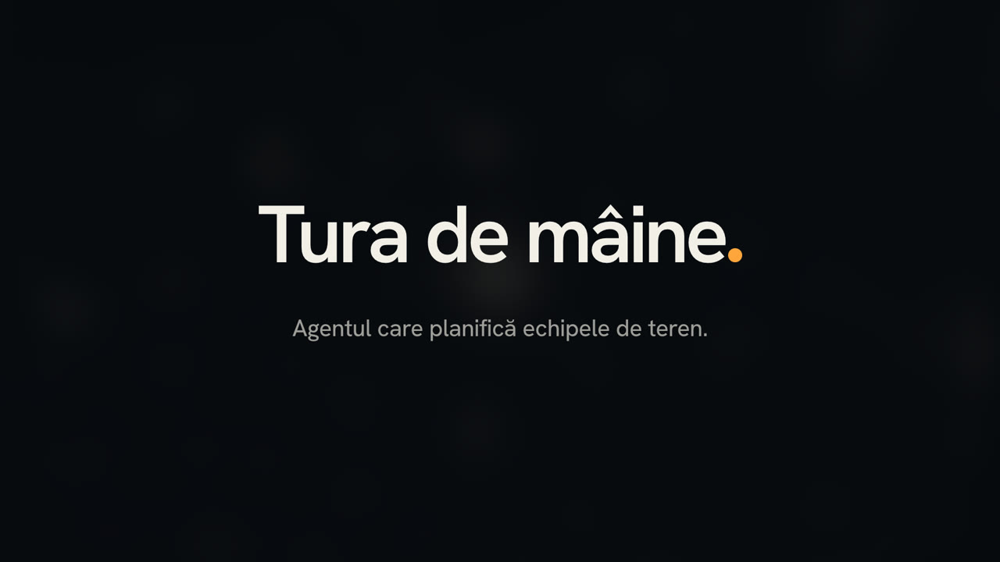
03: Numele
10.0 to 12.5s
Scorul devine punctul chihlimbar al numelui.
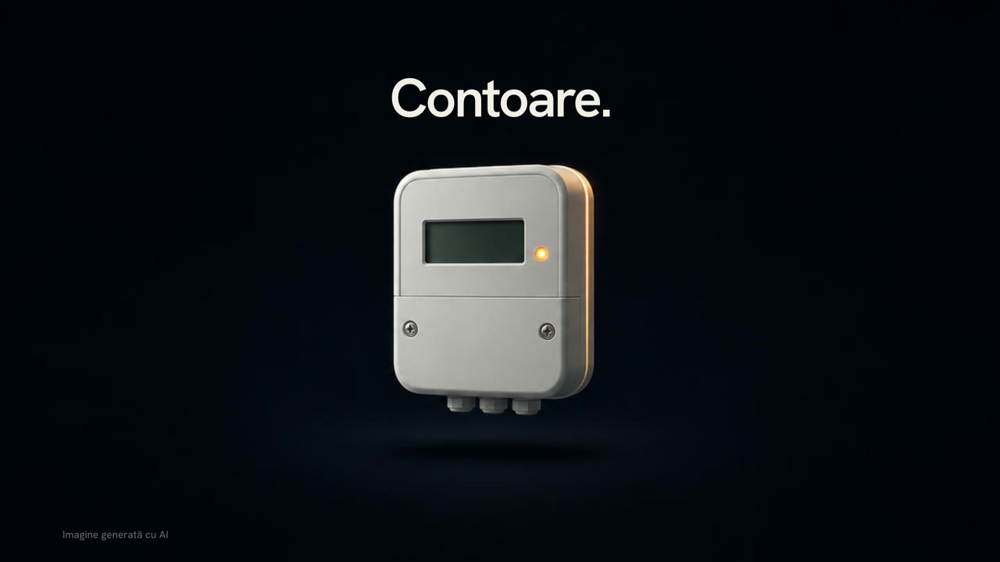
04: Semnalele (A)
12.5 to 13.3s
Contoare.
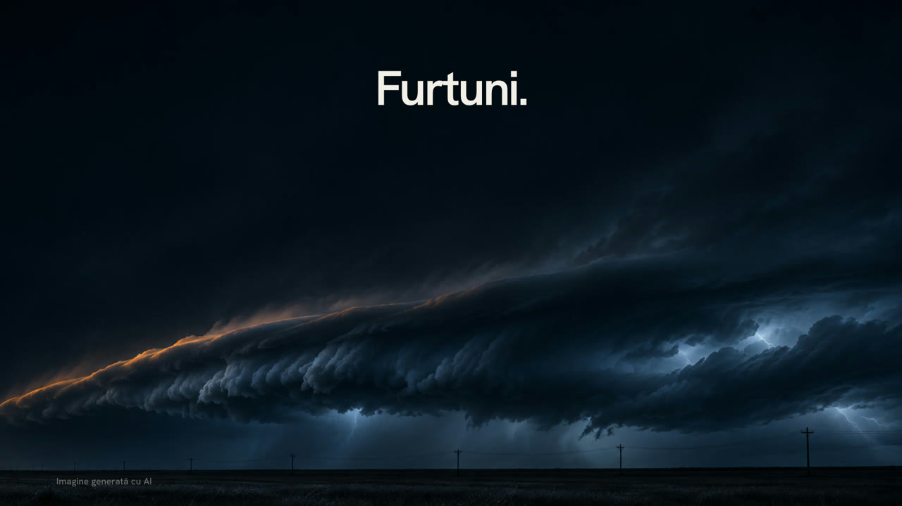
04: Semnalele (B)
13.3 to 14.2s
Furtuni.
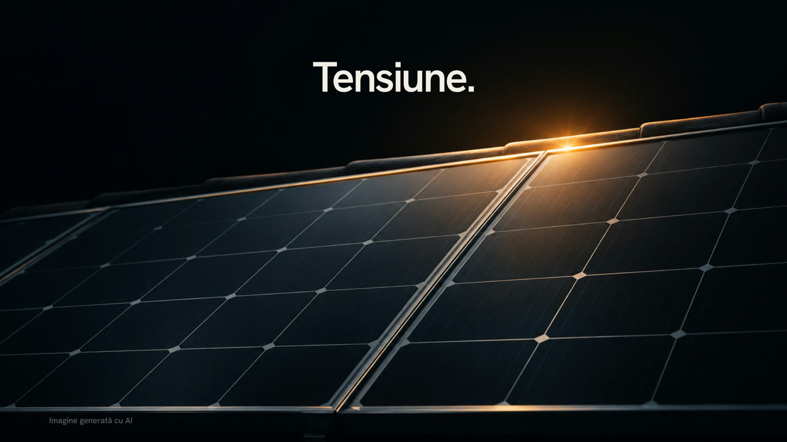
04: Semnalele (C)
14.2 to 15.0s
Tensiune.
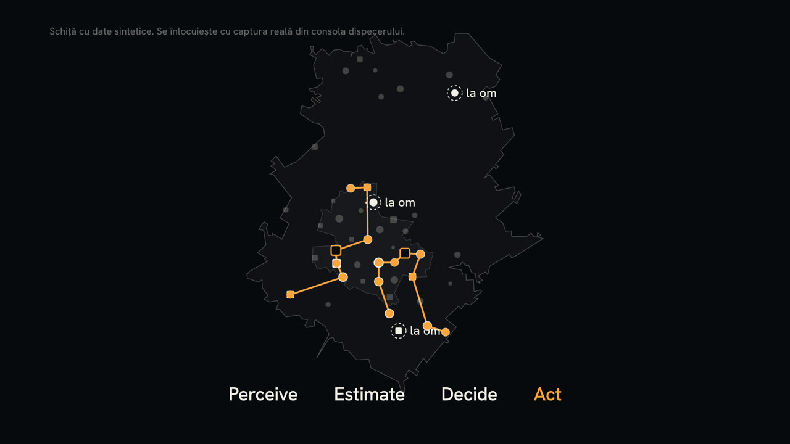
05: Agentul
15.0 to 22.5s
Perceive, Estimate, Decide, Act pe hartă. Schiță cu date sintetice până la captura din consolă.
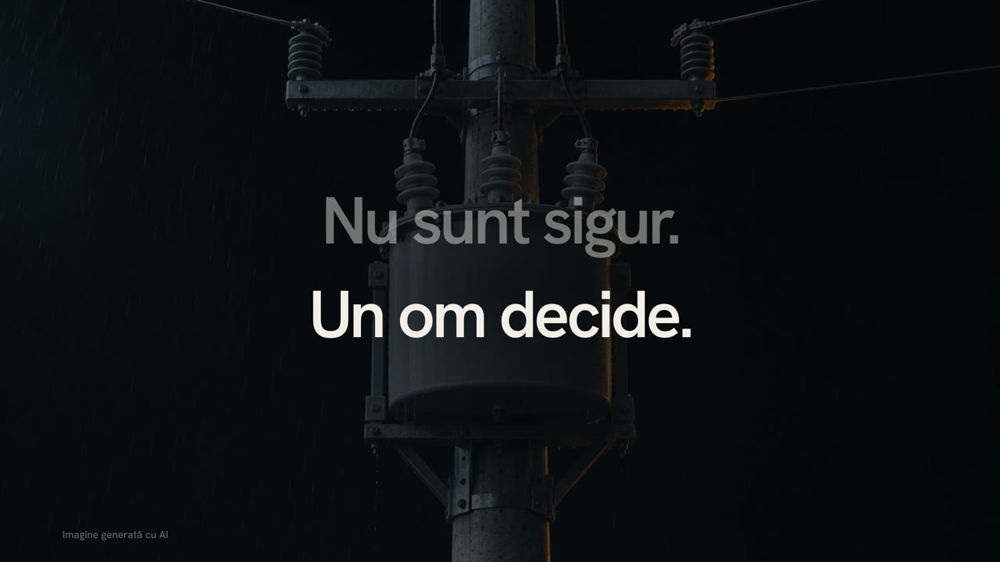
06: Omul
22.5 to 25.0s
„Nu sunt sigur.” „Un om decide.”
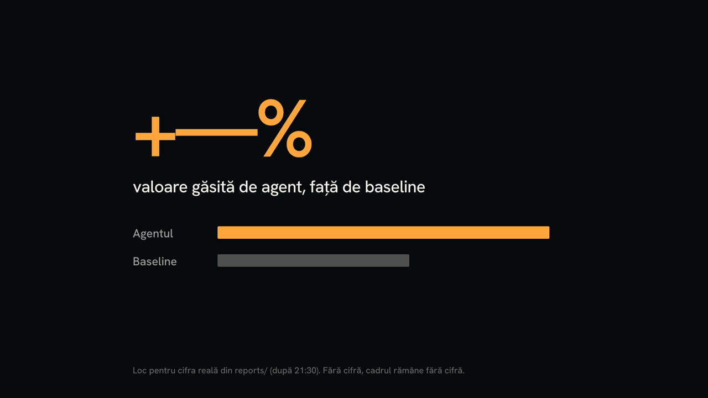
07: Dovada
25.0 to 27.5s
Cifra față de baseline, doar din reports/.
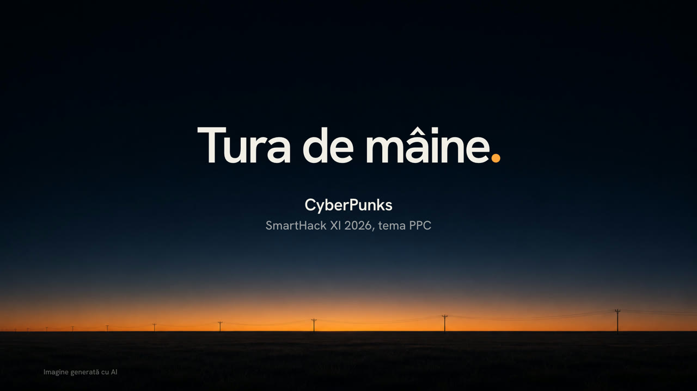
08: Dimineața
27.5 to 30.0s
Numele, echipa, SmartHack XI 2026.